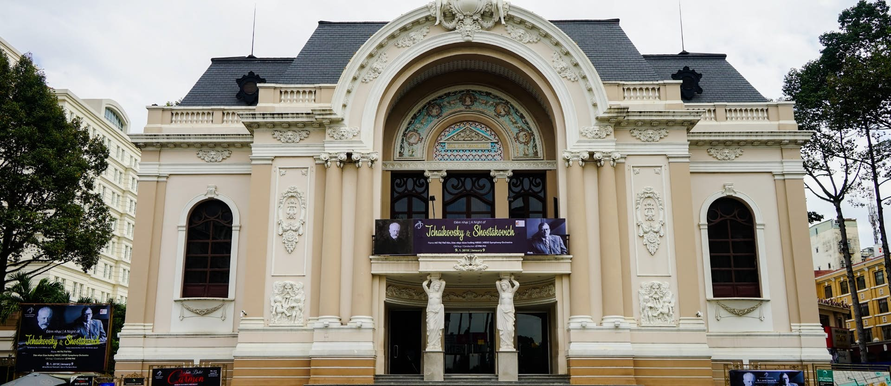

Explore Ho Chi Minh City
A Oh Show
À Ố Show is one of Vietnamese Bamboo Circus performances. À Ố - derives from Làng Phố, which means ‘village and city’. À Ố Show tells a captivating story of the transition from the peaceful life of the countryside to the fast-paced metropolitan life of modern Southern Vietnam.
"This is the most extraordinary show I've seen in quite a while. Tuan Le has captured this culture and elevated my theater-going experience by taking me on a journey of beauty, love and time."
STEFAN HAVES.
Cirque Director, Cirque Du Soleil, Los Angeles.
Apartment 42 Ton That Thiep
Come for the apartment building partially converted into cool boutique shops, and linger for the young, social-media-savvy fashion labels that produce stylish but affordable clothing. Triple T is a great store here selling linen menswear. Head upstairs, and also through to the back to the second building.
Outdoors
Opera House
Gracing the intersection of Ð Dong Khoi and ÐL Le Loi, this grand colonial edifice with a sweeping staircase was built in 1897 and is one of the city's most recognisable buildings. Officially known as the Municipal Theatre, the Opera House captures the flamboyance of France’s belle époque. Performances range from ballet and opera to modern dance and musicals. Check the website for English-language listings and booking information.
Cho Lon Market
Cholon’s main market has a great clock tower and a central courtyard with gardens. Much of the business here is wholesale but it’s popular with tour groups. The market was originally built by the French in the 1880s; Guangdong-born philanthropist Quach Dam paid for its rebuilding and was commemorated by a statue that is now in the Fine Arts Museum. Very little English is spoken but expect a friendly welcome if you take breakfast or coffee with the market's street-food vendors.
Vespa City Tour
A foodie night out on the town.
This Saigon night tour is part night excursion, part street food adventure. Experience Saigon nightlife the way locals do, all from the back of a vintage Vespa scooter.To start off this Saigon night tour, enjoy drinks at our Vespa-themed café, Café Zoom, to watch “as the world goes by” (as said in the Lonely Planet guide book). Throughout the night, try a variety of food and drinks at 2 local restaurants and samplings of Saigon’s best authentic local food. Zoom past the famous must-see sights of Ho Chi Minh City while in the bustling traffic. We’ll also go to a Vietnamese-style coffee shop with special live music bar, and then wrap up the evening at an exciting music bar where the new generation of Vietnamese unwind and flaunt their unique styles.
*Saigon Night Tour Highlights*- All-you-can-eat & free flow drinks, cocktails & snacks at Cafe Zoom, local seafood restaurant, local Vietnamese pancake restaurant, zooming by famous Saigon sights, live music cafe, live music bar.